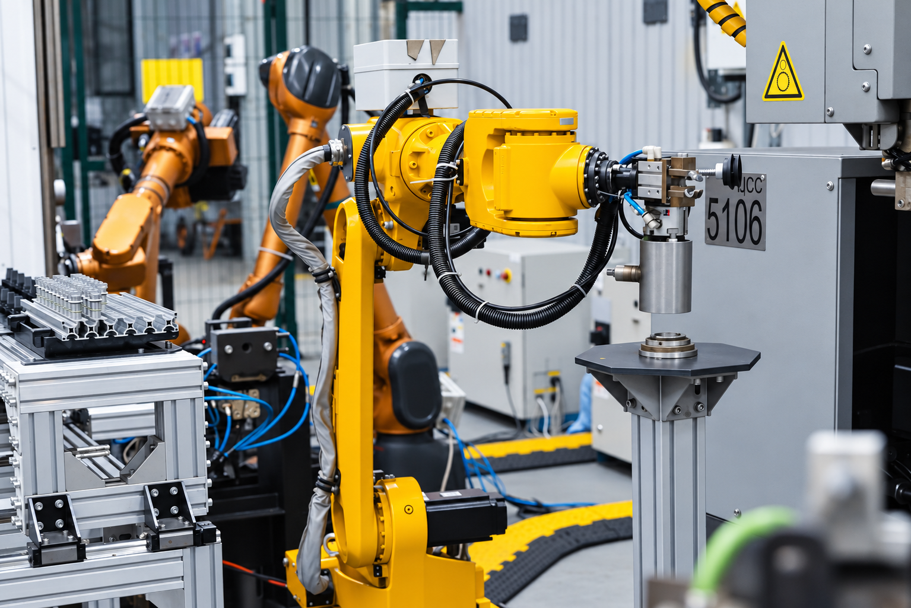
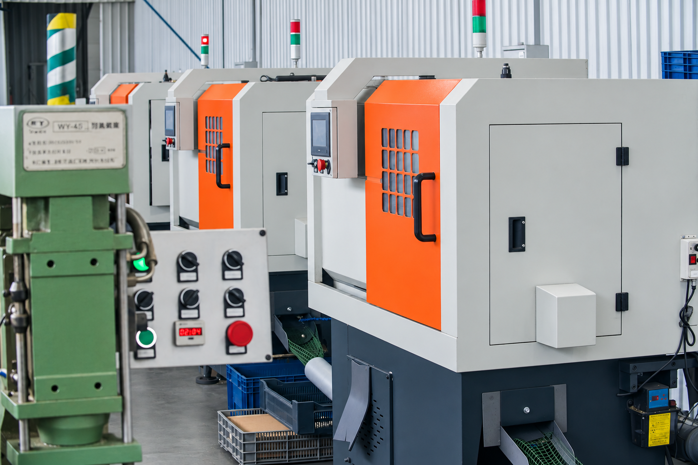
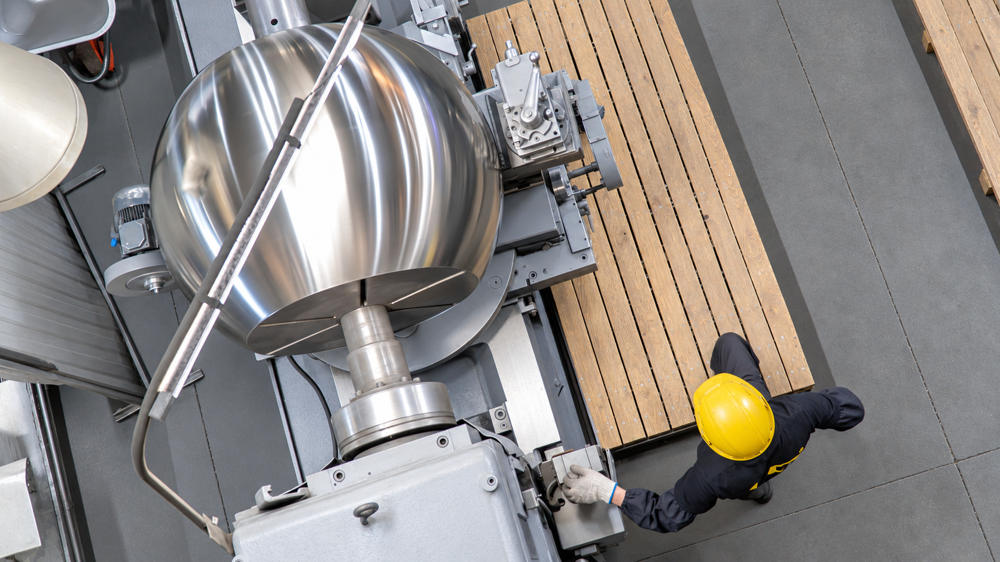
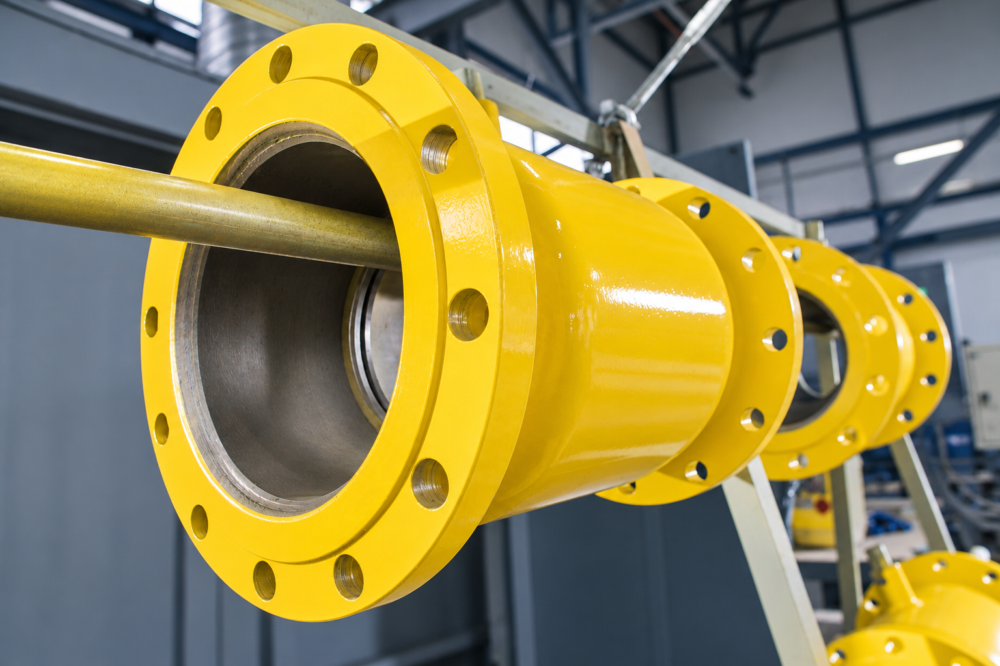

ЗАВОД ЧСГС
системообразующий завод
и лидер производства стальных шаровых кранов
Сервис
Защита от фальсификата/Сервисная поддержка
Глобальное присутствие
и достижения
Карта дилеров/Список партнёров
системообразующий завод
и лидер производства стальных шаровых кранов
Защита от фальсификата/Сервисная поддержка
Карта дилеров/Список партнёров
Завод «ЧелябинскСпецГражданСтрой» (ЧСГС) — крупнейшая производственная площадка Группы компаний «ЛД» и системообразующее предприятие Российской Федерации в сфере машиностроения. Предприятие ведет историю с 1992 года и работает в формате завода полного цикла с 2002 года. ЧСГС обеспечивает полное замещение импортной общепромышленной и специализированной арматуры на ключевых объектах теплоэнергетики, газоснабжения и добывающей промышленности, выстроив независимое от иностранных комплектующих производство.
Подготавливаем 3D-модель завода
В производстве стальной трубопроводной арматуры.
Одни из крупнейших производственных мощностей в отрасли.
Современный производственный комплекс полного цикла.
Собственные разработки в области стальной трубопроводной арматуры.
Профессиональная команда производственных и инженерных специалистов.
От стального проката до готовой арматуры: собственное производство объединяет обработку металла, роботизированную сварку, автоматическую сборку и защиту поверхностей.
Проектирование, комплектующие, сборка и испытания сосредоточены на заводе. Здесь создана первая в России автоматическая линия сборки газовой арматуры собственной разработки. Она контролирует затяжку и сжатие уплотнений для повторяемого качества.

Более 120 многофункциональных станков с ЧПУ обрабатывают детали из Ст20, 09Г2С, 12Х18Н10Т и AISI 316. Сварочные роботы следят за дугой и геометрией шва, обеспечивая прочность корпусов при гидравлических и механических нагрузках.

Шлифование и полирование контактных поверхностей улучшают геометрию и снижают шероховатость. Меньшее трение продлевает ресурс уплотнений и уменьшает момент управления.

Гальванические покрытия и термодиффузионное цинкование защищают пружины и крепёж от атмосферной и химической коррозии.

Подготавливаем продукцию